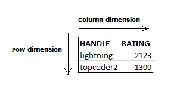
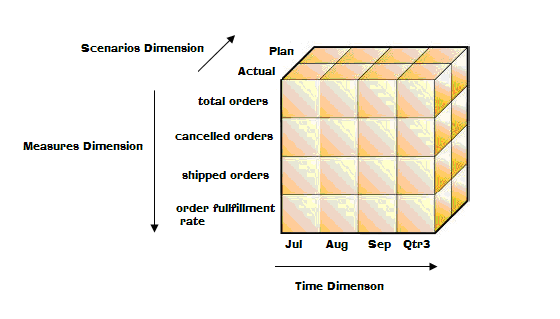
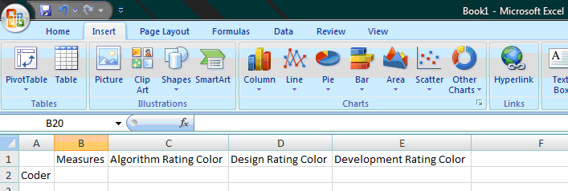
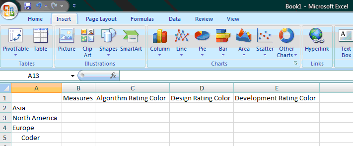
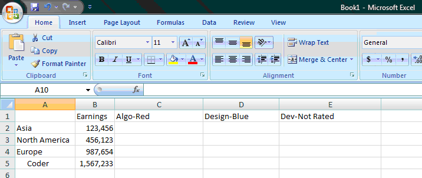

Member Search

|
In this article, we'll explore the exciting topic of multidimensional databases, which we'll refer to as MDDBs from now on. MDDBs are a very popular technology in the business intelligence arena, and they allow a company to perform in-depth, strategic analysis on a variety of factors affecting their company. In addition, MDDBs allow analysts in the company to leverage tools with which they're already familiar, such as Microsoft® Excel, to work with and analyze data from MDDBs in a "slice and dice" fashion. The ability to slice and dice the data puts tremendous power in the hands of the business user, and that will become more apparent as we delve into more of the details of MDDBs.
The format of this article will be primarily focused on MDDB concepts over specific MDDB vendors; however we'll look at Hyperion® Essbase in several parts of the article to give you some concrete examples of MDDB technology in practice. In addition, we'll look at some real world examples of MDDBs so that you can get a feel of how they are used in the business arena and the impact they can make.
Having knowledge of relational databases will be helpful to someone reading this article, but it's not required. However, we'll assume that you at least know what a relational database is, because we'll be comparing relational and multidimensional databases. If you need an introduction to relational databases, you can refer to the article here.
Introduction
First, just what in the world are we talking about when we say "multidimensional database"? Well, before we get to that, there are a few terms we need to understand. The first term is online transaction processing, commonly referred to as OLTP. As the name implies, OLTP consists of transaction-based systems, which frequently use a relational database as the back end data store. OLTP systems are usually focused on quick response times and servicing needs immediately. A good example of an OLTP system is the automatic teller machine (ATM) at your local bank. When you go to make a withdrawal from the ATM, you aren't really interested in analyzing a bunch of data, or at least the people in line behind you hope you aren't! In other words, you are there to make a withdrawal, deposit, etc. and move along so that the next person waiting in line can complete their transaction. The OLTP system needs to expedite that process. This leads us to another term we need to define, OLAP, which is stands for online analytical processing. For you history buffs, the term OLAP was coined by E.F. Codd & Associates in a white paper in 1994[1]. The OLAP approach is focused on the analysis of data, and typically that data originates from OLTP systems. That's not to say that OLAP technology is "slower" than OLTP technology. But the two are focused on entirely different things. OLTP is focused on "getting the job done", and OLAP is focused on "analyzing the results of the job".
So it's important to understand that there's quite a paradigm shift when we go from relational databases to MDDBs. To give you another more concrete example, think of the order processing system running at a sales warehouse. All day long that system is storing orders, shipping information, inventory, and a lot of other information required for running a sales operation. Moreover, there are many people at the warehouse who are interacting with that OLTP system, recording orders, shipping product, managing late orders, etc. These individuals are concerned with making sure that the operation is running smoothly and that customer needs are met, so it's critical that the OLTP system respond as quickly as possible.
But a sales analyst might ask the question, "How are we doing on our sales this year vs. our budget (i.e. our sales plan)?" The people in the sales warehouse probably aren't going to be able to answer that question. However, it's their OLTP system that holds the data which needs to be analyzed to come up with the answer. The OLTP system has all the orders for all product sold for the year, which is exactly what the sales analyst needs so they can compare it to the budget (probably stored in another system). But there might be billions of records in the OLTP system, so trying to run reports off of the OLTP data is bad for a number of reasons. First and foremost, OLTP systems are usually mission-critical to the business. When these systems slow down or experience failure, the entire business suffers. Have you ever tried to order something off a website and gotten some kind of message like "Our site is currency experiencing problems, please try again later"? Few things are more frustrating. So it's very important that OLTP systems stay online and function at top performance levels, and we want to avoid putting any unnecessary load on those systems.
The sales analyst still needs an answer, so what should we do? Well, that's where OLAP technology comes in. We can take the data from the OLTP system and load it to our OLAP system. Note that when we say "OLAP system", we're really referring to the MDDB. The two terms mean essentially the same thing. Another common term you'll hear used for an MDDB is a "cube", or an "OLAP cube". Really, the terms MDDB, cube, and OLAP cube are used pretty interchangeably, but we will discuss the cube concept shortly. Let's get back to our sales analyst's issue. We would typically perform the load of OLTP data to the MDDB in the early morning hours when no users are using the OLTP system, so as to minimize any kind of potential business impact. In systems that are available 24 hours a day 7 days a week, we should load the OLTP data during non-peak times. The load process is usually a lot more involved and may require "massaging" the data to get it into an analytical form so it can be put into the MDDB. The term for this load process is called ETL (extract/transform/load), and there are many ETL tools out on the market today. But ETL is really beyond the scope of our discussion here. So once the nightly ETL load runs, the OLAP database is loaded and the sales analyst can come in the next morning and find the answer to her question. The beauty of it is that she can do that without impacting the OLTP system one bit. The folks in the sales warehouse can continue taking orders and running the business, and the sales analyst can do critical analysis of important data which can help determine how the business is performing.
One thing to keep in mind when discussing OLAP databases is that there is usually data latency in an OLAP cube. In other words, the data is usually from some point in time, like maybe the snapshot of data from the night before. But from an analytical standpoint, this data latency is usually just fine because users are doing analysis like comparing sales trends, etc. and it's not really critical to have up-to-the-minute data from the OLTP system. Note that some of the newer OLAP technology offered by Microsoft Analysis Services allows for nearly real time analysis of business intelligence data[3]. In other words, they have mechanisms where you can keep the OLAP data in sync with the relational data.
So to wrap up this section, we've looked at OLTP and OLAP and the differences between the two. Make sure you have a good grasp of these concepts before moving to the next section, where we'll begin to explore the "cube" concept.
The "Cube"
In the last section, we introduced the term "OLAP cube". The reason the term "cube" is used when describing a MDDB database is because of the way the data is stored. From a conceptual standpoint, you can think of the data stored in an MDDB as being stored in multidimensional arrays, where we're usually dealing with much more than 2 dimensions. This is much different from a relational database, because in a relational database table you are really only working in two dimensions, namely, row and column. So if I have a table called coder in a relational database, and the columns in that table are handle and rating, the handle and rating columns represent a single dimension, and the actual rows of data in the table represent another single dimension (refer to figure 1).

Figure 1
Figure 1
However, when we talk about cubes, we're typically dealing with many dimensions, not just two. When you design a cube, one of the first things you must do is determine the dimensions you want in the cube. It's very important to spend time really thinking through your cube design before implementing it, because if you don't choose your dimensions wisely it can cause the cube to perform poorly and, even worse, you won't meet the business needs. It's important to understand that the dimensions are really the architectural blueprint of your cube.
So going back to our sales warehouse example, we might have a cube with a Time dimension, a Scenarios dimension, and a Measures dimension (see Figure 2 below). The Scenarios dimension might contain members for plan and actual, which would correspond to planned (i.e. budgeted) values and actual (i.e. real sales) values respectively. Our Measures dimension could contain members for things like number of total orders taken, number of orders which were shipped or cancelled, and the order fulfillment rate, which is the ratio of orders shipped vs. orders placed. Finally, our Time dimension would contain members representing the fiscal calendar for the company, like fiscal week number, month of the year, fiscal quarter, etc. So conceptually, our cube might look like figure 2, shown below.

Figure 2
Figure 2
From a coder perspective, you could think of this cube as a three-dimensional array, in which the aforementioned dimension names correspond to dimensions in the array. And to extend that analogy further, if you wanted to know how many actual orders were shipped for September, you could look at cube[Actual][Sep][shipped orders], which would correspond to the "data cell" in the cube that contained that piece of data.
The real power of an OLAP cube stems from the fact that as we access those data cells in the multidimensional "array", the access time is almost instantaneous. Now, let's stop for a minute and think about how we would determine how many actual orders were shipped for September from a relational database. We would most likely write a SQL query to extract the answer from the relational database tables. However, as we mentioned earlier we obviously wouldn't want to run that type of query on our OLTP tables as that could slow down the performance of the OLTP database. But not only that, we would have to make sure that the relational database tables had the appropriate indexes on the tables we were querying so that the query would run in a reasonable amount of time. Remember, OLTP database tables can contain billions of records.
In summary, one of the primary advantages offered by MDDBs is the fast access they offer to data.
Dimensions
We introduced dimensions in the previous section, but now we'll take a more formal look at them. Dimensions, as their name imply, provide a way to categorize data into different groups. For example, let's pretend that we're building an OLAP cube to store TopCoder data about coders so we can analyze it. We need to think about the different types of data we have and see how we might categorize it, so let's make a list of some items in which we might be interested:
- Coder Handle
- Algorithm Rating
- Design Rating
- Development Rating
- Algorithm Rating Color
- Design Rating Color
- Development Rating Color
- Continent
- Country
- Join Date
- School
- Number of Algorithm Rated Events
- Number of SRM Wins
- Earnings
Next, we need to come up with some logical groupings for this data, and those logical groupings will become our dimensions. So let's start with the "measures", which are typically numeric values or percentages. We've already seen an example of a Measures dimension in the sales cube from the previous section. In the above list, we could make measures out of the numeric rating fields and the number of algorithm rated events field, so our measures dimension could look look like this:
Measures
Algorithm Rating
Development Rating
Design Rating
Number of Algorithm Rated Events
Number of SRM Wins
Earnings
The way to think about measures is to think of them as the "data values" you are storing in the multidimensional array. All the other dimensions are focused around analyzing these measures. In other words, measures are really a special dimension. Rating is clearly a measurement in the case of our coder cube, because it has a numeric value, and the same is true for the number of algorithm rated events, the number of SRM wins, and earnings.
Next, let's look at coder handle. We have some options here, and one of them would be to combine coder handle, country and geographic region into one dimension. In other words, within each dimension, we can have a hierarchy. So we could do something like this for our coder dimension:
Figure 3
Coder
Asia
China
Coder1
Coder2
Coder3
.
.
North Korea
Coder4
Coder5
Coder6
.
.
North America
United States
Coder7
Coder8
.
.
.
.
Europe
France
Coder9
Coder10
.
.
.
.
In this example, we've started our hierarchy with the continent, and underneath each continent we have country, and underneath each country we have the actual coders for that country. What we have to decide here is whether this hierarchy will meet the needs of our users. The key thing to notice is that the more data you combine into a dimension, the less flexibility you have later. For example, what if we want to run some analysis by coder country? We can do it with this hierarchy, but it's not as easy as it could be if we had country as a separate dimension. In other words, to run analysis by country with the hierarchy above, we have to drill into each continent and find all the countries for that continent. If, on the other hand, we had country as its own dimension, then we could run the analysis by country much more easily since we wouldn't have to drill in by continent to find each country. For the purposes of our discussion, we'll assume that the above hierarchy is sufficient and we go with that for our coder dimension.
This brings us to another concept regarding cubes, namely, aggregation. The idea behind aggregation is that we typically load values to the lowest level in each dimension in the cube, and then sum up, or "aggregate" the values to the upper levels in each dimension. With Hyperion® Essbase, level 0 represents the leaf level members in each dimension. For example, in figure 3 above, the coder members of the dimension would be level 0. The parents of level 0 members are level 1 members, so the countries would be level 1. The parents of level 1 members are level 2, and we continue this numbering scheme on up until we get to the root member of the dimension. So when we are loading our cube with coder data, we would load it to the lowest level in our coder dimension. In other words, we would load it at the coder level. And after we load that data, we can then "aggregate" or roll it up to the upper levels. This is one of the main reasons OLAP cubes are so powerful. Since those values are aggregated, we don't have to do any summing when retrieving the values from the cube. The sum is already pre-calculated! You can think of a cube as sort of a "power array", in that we can look at any combination of members from the dimensions in the cube and get the answer in which we're interested. So conceptually, we could look at cube[Coder1][Earnings] to get Coder1's total earnings, or cube[China][Earnings] to get the total earnings for Chinese coders. And again, the real power here is that this answer is already pre-calculated in the OLAP cube so access time is minimal.
Again, let's contrast how we would get this information with a relational database. In a relational database, if you wanted to know the total earnings for coders from China, you would have to run a SQL statement and sum up the earnings (assuming that you hadn't built some kind of summary table in the relational database already). This may not seem like much when you're only talking about a few thousand coder records, and a SQL query would probably do just fine in this example. But if you consider having to run a SQL query to sum up values for 800 million transaction records from a sales database, you can see where OLAP cubes offer a huge advantage by having the values of interest already aggregated.
Some of you savvy folks out there might have noticed that aggregation doesn't necessarily make sense for all measures. For example, summing up two coders' ratings doesn't provide a meaningful value. So for these types of values, we wouldn't want to aggregate them to upper levels. Most MDDB vendors have a way to control this when you set up the cube. For example, with Hyperion® Essbase you can specify the type of aggregation to use, such as addition, subtraction, etc., but you can give the dimension member the "no consolidation" property, which means its values won't be rolled up to its parents.
So now that we've defined our coder and measures dimension, let's look at the other dimensions we need. We obviously want to store information about a coder's colors, and that information is in the algorithm rating color, development rating color, and design rating color values. We could make members in our measures dimension for these items, and just store red, yellow, etc. for the actual data value in the cube. And that may be fine, depending on the needs and types of analysis that are going to be performed on the cube. The other choice we could make here would be to make these fields into three cube dimensions, as shown below in figure 4:
Figure 4
Algorithm Rating Color
Algo-Red
Algo-Yellow
Algo-Blue
Algo-Green
Algo-Gray
Algo-Not Rated
Design Rating Color
Design-Red
Design-Yellow
Design-Blue
Design-Green
Design-Gray
Design-Not Rated
Development Rating Color
Dev-Red
Dev-Yellow
Dev-Blue
Dev-Green
Dev-Gray
Dev-Not Rated
Notice that the color in each dimension is prefixed with Algo, Design, or Dev respectively. The reason for this prefix is that with some MDDB vendors (depending on version), each member name must be unique across every dimension in the cube. Later versions of Hyperion® Essbase offer the ability to have duplicate member names, but earlier versions did not.
Now, what advantage does having the three rating color values as separate dimensions offer us over having them as members in the measures dimension? Well, it gives us the ability to "drill-in" to the cube to find the total earnings for all coders from North America who are Algo-Red and Dev-Blue, for example (i.e. cube[North America][Algo-Red][Dev-Blue]). Note that we could also drill into the "North America" member and find out the actual coders. The way this works is that when you drill into the cube, if no data is present for a member then it won't bring the member back (depending on the add-in settings). So if you drill down into North America, but there are no members that are both Algo-Red and Dev-Blue, then no members would be brought back. Different MDDB vendors have various tools for interfacing with a cube, but most of the more popular ones use some kind of Microsoft® Excel Add-In because spreadsheets work extremely well for working with cubes and drilling in and out of dimensions. With Hyperion® Essbase, for example, if we were to connect to the cube we have defined so far, we might be presented with a sheet like figure 5 below:

Figure 5
Figure 5
From there, you can "double-click" any dimension, and the add-in will drill into the dimension. So if I double-clicked on Coder, I'd end up something like this (obviously there would be many more countries but this is just for illustrative purposes):

Figure 6
Figure 6
I could keep drilling into dimensions, and drill into the measures I'm interested in to see the actual values. So we could drill into Measures, and also navigate down to the Algo-Red, Design-Blue, Dev-Not Rated members and end up with this configuration:

Figure 7 (illustrative purposes only, not actual data)
Figure 7 (illustrative purposes only, not actual data)
As you can see in figure 7, we now know the total earnings by continent for coders who are red in algorithms, blue in design, and not rated in development.
I hope you can see how this "drilling" ability gives the user virtually endless possibilities to slice and dice data into various formats to do the analysis they need. They can look at the dimensions at various levels (ex. Continent, country, etc.) to get the summary information in which they're interested. And the beauty of it all is that once you build a cube for them, they can do this type of analysis themselves and you rarely have to write custom reports (that use relational database data) for them anymore! It truly puts the power in the analyst's hands, and we'll look at a real world example of that a bit later.
We've made great progress on our cube! There are only two more values left to map, namely, school and join date. We'll go ahead and make school its own dimension since it probably makes sense to be able to do analysis at school level.
As for join date, usually with date values it's best to split date into two dimensions: one for year and one for calendar. We usually call the calendar dimension "Time". Here's an example:
Figure 8
Year
2008
2007
2006
2005
2004
2003
2002
2001
2000
Time
Qtr_1
Jan
Jan_1st
Jan_2nd
Jan_3rd
.
.
Feb
Feb_1st
Feb_2nd
Feb_3rd
.
.
Mar Mar_1st
Mar_2nd
Mar_3rd
.
.
Qtr_2
Apr
Apr_1st
Apr_2nd
Apr_3rd
.
.
May
May_1st
May_2nd
May_3rd
.
.
Jun
Jun_1st
Jun_2nd
Jun_3rd
.
.
Qtr_3
.
.
Qtr_4
.
.
So we essentially create a time hierarchy so that if we want to know which coders joined in the first quarter of 2004, we can drill into the above dimensions and find that information. And by using this dimension structure, we don't ever have to change our Time dimension; we just add a new member to our Year dimension as we reach a new year, or we could just pre-add as many as we need.
Besides standard dimensions, another type of dimension you can use in a cube is an "attribute dimension". Different MDDB vendors implement attribute dimensions in various ways, but the way to think of attribute dimensions is that they are "characteristics" of members of another dimension. For example, if join date wasn't something that we needed to be able to do heavy analysis on, we could make it an attribute dimension associated with the coder dimension, since each coder has a join date. The thing to remember about attribute dimensions is that they don't give you quite the analysis power that a normal dimension does, so you have to ensure that they are going to meet your needs. For example, you can only associate one member of an attribute dimension with a member of a standard dimension. So let's say, for example, that we wanted to track coder's algo rating over time, but we wanted to make algo rating an attribute dimension. That would not work, because you could only have one rating value associated with a coder since it's an attribute dimension. In that case, you'd have to use two standard dimensions, one for rating time and one for rating. The other thing to remember about attribute dimensions is that the values aren't pre-aggregated in the cube like they are with standard dimensions, so the aggregation happens at data retrieval time. This can be a performance hit if you have many members in the attribute dimension, so you want to be smart in you considerations of where to use them or a standard dimension.
One word of caution about dimensions: the more dimensions you have, typically the longer it will take to aggregate the data and drill into dimensions. In other words, you don't want to just keep adding dimensions arbitrarily, because eventually if you get too many dimensions the cube is going to suffer performance-wise.
So at this point, we have designed our first OLAP cube! Give yourself a pat on the back!
Building Dimensions & Loading Data to the Cube
Obviously, a cube is worthless without data. We already alluded to ETL earlier in the article, and that is the way we get the data in the relational database into the form we need for loading into the cube. Sometimes, nothing has to be done here (i.e. the data can be loaded directly from the relational tables "as is" without any ETL). In either case, we must get the data into the cube. And note that many MDDB vendors don't restrict you to using a relational database as the data source for loading cube data. You can use spreadsheets, CSV files, and many other types of data source.
Before we can load the data into the cube, however, we must make sure we have all the dimension members present for the data which we wish to load. In other words, we can't load Coder14 data until we've actually added the Coder14 member to the coder dimension. Again, how you build dimensions varies with MDDB vendors. With Hyperion® Essbase, for example, you use what's known as a "load rule". With a load rule, you typically write an SQL statement (assuming you're using a relational database as the data source) to query for the dimension members you wish to load. You can load an individual dimension, or multiple dimensions in the same load rule. You can also specify if members are to be removed if they aren't found in the data source, so that is one way you can remove members from the cube (inactive coders, for example).
One the dimension members have been added, we're ready to load the actual cube data. The load rule for loading data to the cube must specify a member value for each dimension. If you think about it, that makes sense because if we leave out a dimension, then the loader won't know where to put the data in the cube. As mentioned earlier, it's usually best to load data to the lowest level of each dimension. Note that if you accidentally load a data value to a higher level, then when you "calculate" the cube (covered in the next section), you will wipe out the values because the aggregation will roll up the lower level value, which is nothing, to the higher level. As an example, if I loaded earnings values to the country level instead of the coder level, when I did the aggregation the country values would be overwritten because it would aggregate the values at coder level upwards.
Load rules are a big subject, and we've just touched on them briefly here. There are many caveats to deal with when loading data to a cube, such as what to do with rejected records, and how to handle duplicate member names. It's important to have a good strategy in place for handling these types of situations whenever you are going to build cubes. The strategy may vary from cube to cube, because with some cubes you may not care as much if records are rejected, but in other cubes it may be a critical event.
Calculations
So now that we've loaded our data to the OLAP cube, we need to aggregate it up to the higher levels. To do that, we must run a "calculation" step, which does just that. Note that we are not limited to just aggregating (i.e. rolling up) data, we can also have complex calculation formulas on data members. The industry standard for writing these types of calculations is MDX, which is a query language for OLAP databases. It's like SQL in a lot of ways, but it's sort of a paradigm shift because you have to think a bit differently when working with MDX because you are working in many dimensions, not just two.
MDX Calculation scripts can do other things as well, such as allocating a sales adjustment across several products over a time period. For example, let's say a department store has a 6 million dollar sales adjustment. This dollar amount needs to be distributed across fiscal year 2008, 1st quarter sales. The MDX script could take that 6 million dollars and "spread" it down to the lowest levels in each dimension, so that each product would contain a portion of the adjustment. These types of adjustments are quite common in sales cubes, where things like kickbacks and other types of dollar adjustments occur on a frequent basis (quarterly, for example) and have to be distributed across products.
MDX calculations also allow us to do simple calculations, such as creating a formula to add two values together and subtract another. For example, we might have the following formula for net sales:
Net_Sales = Gross_Sales - Cost of Goods Sold + Sales Adjustments
We could do that calculation ourselves in the load rule using a SQL expression, or we could let the cube calculate it for us. If you do the calculation in the SQL expression though, then you are aggregating computed values, which can cause a loss of precision as those computed values are aggregated to higher levels. So it's usually a good strategy to load the raw values and put the calculations in the cube itself.
Storage Options
In this section, we'll deal with some specifics regarding Hyperion® Essbase storage options because it's important to understand the options you have available. So far, we've been discussing the Block Storage Option (BSO), which requires us to calculate the data to get it to higher levels. Obviously, this aggregation step can take substantial time if you have a lot of data and/or dimensions in the cube. One thing you can do with BSO cubes to reduce aggregation time is specify that a member is a Dynamic Calc member. This means that the value isn't calculated until retrieval time. The advantage here obviously is that your aggregation time is reduced. However, you must realize that it can slow down your retrieval time, because now the aggregation happens at fetch time. So it's a "pay me now, pay me later" situation. Generally, you want to limit dynamic calcs in a cube because you are usually going to load the cube in a nightly batch process, when time isn't a scarce resource. So a longer calc time doesn't matter as much since it's happening at night. But when an impatient financial analyst is fetching a value from the cube, you want that result to come back quickly.
However, Hyperion® Essbase also offers another type of storage option called Aggregate Storage Option (ASO). With the ASO technology, no additional calculation step is required to aggregate the data! The values are aggregated dynamically at retrieval time. So basically, you load your data and you're done. ASO cubes are usually much smaller than their BSO counterparts, so that is one reason why the values can be aggregated at runtime and you can still get good retrieval performance. However, you can also pre-calculate values in an ASO cube and store them in aggregations, which is useful when the cube gets extremely big.
So which option should you choose, BSO or ASO? That depends. ASO cubes don't allow you to run calculation scripts, since all data retrieval is dynamic (except for the pre-calculated values we just mentioned). So in a financial cube, for example, where you are going to be doing a lot of allocation calculation scripts, BSO is probably the best choice.
However, in a cube where you want to have a lot of detailed data and want to be able to load and retrieve it quickly, ASO is a great option to consider.
Some Real World Examples
In this section, I'll share some real world examples of how Hyperion® Essbase OLAP technology has made a huge impact in one of the places I've worked.
In the shop where I worked, we were literally getting new report requests every 2-3 days for some new report for our forecasting system. The users wanted to see forecast totals by style, color, and size (it was an apparel manufacturing business), then somebody else would want to see totals by style only. Another user just wanted a report that showed total sales for last year for our "Big 3" retailers. In short, we couldn't finish one report before there were 2 to 3 more user requests being added to our queue! That's when we decided to replace the entire forecasting system with an OLAP cube. One thing I haven't mentioned until now is that you can also load data to the cube through the Excel Add-In. So we made the OLAP cube the data repository for the forecast, so users would use the Excel Add-In to "lock and send" their forecast data to the cube using Excel. They also had the ability to calculate the cube (it was a BSO cube) so their forecast would be aggregated. We also loaded our actual sales data to the cube on a weekly basis so the users could compare actual to forecast to see how the company was doing, and also so they could plan the forecast accurately by looking at prior year sales.
Once we gave the forecast group this OLAP cube, amazingly, the weekly report requests suddenly stopped! We found that the users were able to meet all their reporting needs with the Excel Add-In and OLAP cube, and we no longer had to write custom reports. It was a huge win for the company, and the users absolutely loved it!
In another area of the company, we were having major problems with excess inventory and we needed a way to track and locate this inventory at the plants and get rid of it by selling it to our wholesale distributor. We had a short timeframe to do this, because after a selling season ended, the inventory was basically useless and the wholesaler would no longer buy it. So we developed an OLAP cube to track the inventory and compare it against the forecast (the same forecasting system I just described). Doing this allowed our financial planning group to see ahead of time which of our inventory was not going to be sold by subtracting forecast from inventory and seeing what was left. The financial planning department could then take a proactive approach to selling the inventory to our wholesaler before it became obsolete, and we literally saved millions of dollars in the process!
Conclusion
I hope by this point in the article you can see the advantages that MDDB's offer. The learning curve is a bit steep when you're getting acclimated with building cubes, but the payoff is tremendous, as you can use the technologies to make a huge impact in a company.
References
[1] - http://en.wikipedia.org/wiki/OLAP_cube
[2] - HYPERION® SYSTEM™ 9 BI +™ ANALYTIC SERVICES™ RELEASE 9.3 Database Administrators Guide
[3] - http://www.microsoft.com/technet/prodtechnol/sql/2005/rtbissas.mspx